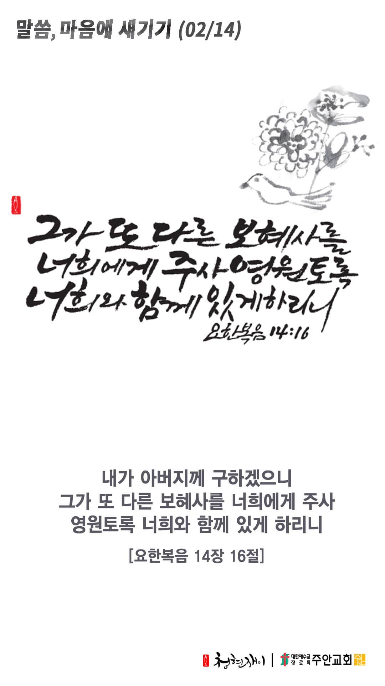

온라인 기도실 안내
2021년 02월14일(일)~02월20일(토)
- 온라인 기도실은 온 회중이 함께 주님 앞으로 나아가는 자리입니다
- 30분 정도 여유를 가지고 하시기 바랍니다
- 말씀과 묵상, 찬양과 기도로 나아갑니다
- 배경 음악이 나올 수 있습니다 볼륨을 조절해주세요
준비가 되셨으면 아래의 버튼을 눌러주세요
할렐루야
내 영혼아 여호와를 찬양하라
시146:1
- 가사를 묵상하며 읽습니다
나의 기도하는 것보다
더욱 응답하실 하나님
나의 생각하는 것보다
더욱 이루시는 하나님
우리 가운데 역사하신
능력대로 우리들의
간구함을 넘치도록
능히 하실 주님께
모든 영광과 존귀 찬양과
경배를 돌릴지어다
모든 영광과 존귀 찬양과
경배를 돌릴지어다
할렐루야
내 영혼아 여호와를 찬양하라
시146:1
나의 기도하는 것보다 by 이용준 목사
위의 찬양이 끝나면 말씀읽기를 눌러주시면 됩니다
주의 말씀은 내 발에 등이요
내 길에 빛이니이다 시119:105
오늘의 말씀입니다
음악 소리가 크면 조절하시기 바랍니다
"나의 기도하는 것보다" 편곡 및 연주 by 이지선

마음의 묵상
요 14:16
“내가 아버지께 구하겠으니 그가 또 다른 보혜사를 너희에게 주사 영원토록 너희와 함께 있게 하리니”
1. 예수님께서 승천하신 이후 하나님께서 우리에게 보내신 분은 누구이신가요?
2. 보혜사의 뜻은 무엇인지 아시나요?
3. 보혜사 성령님은 우리와 얼마 동안 함께 계시나요?
보호하시는 성령님을 의지합니다
회개, 삶의 방향을 바꾸는 결정
회개는 공동체를 살리는 길입니다
“여호와께서 이르시되 내가 만일 소돔 성읍 가운데에서 의인 오십 명을 찾으면 그들을 위하여 온 지역을 용서하리라”
- 창세기 18장 26절 -
3분 정도 회개하며 주님 앞에 나아갑니다
사슴이 시냇물을 찾기에 갈급함 같이
(시42:1)
- 다음의 말씀을 소리 내어 읽습니다
[아모스 5장 4-6절]
4 여호와께서 이스라엘 족속에게 이와 같이 말씀하시기를 너희는 나를 찾으라 그리하면 살리라
5 벧엘을 찾지 말며 길갈로 들어가지 말며 브엘세바로도 나아가지 말라 길갈은 반드시 사로잡히겠고 벧엘은 비참하게 될 것임이라 하셨나니
6 너희는 여호와를 찾으라 그리하면 살리라 그렇지 않으면 그가 불 같이 요셉의 집에 임하여 멸하시리니 벧엘에서 그 불들을 끌 자가 없으리라
하나님 나라
1. 하나님의 나라가 속히 이 땅에 임하게 하소서
하나님 아버지,
바이러스와 변이 바이러스가 더 이상 전세계에 확산되지 않게 하소서. 가난한 나라와 부자 나라를
가리지 않고 모든 나라에 백신과 치료제가 안전하게 공급되어 전 세계에 치유의 역사가 일어나게 하소서.
간절한 마음으로 3분 정도 기도합시다
남과 북
2. 남북한이 속히 복음으로 통일되게 하소서
하나님 아버지,
지금 남한에 내려와 있는 새터민들이 따듯한 사랑과 섬김을 받게 하시고, 예수 그리스도를 영접하게 하소서.
그리하여 그들이 통일된 후에 남과 북의 화해를 주도하는 가교가 되게 하시고,
복음의 통로가 되어 주님께 쓰임 받게 하소서.
간절한 마음으로 3분 정도 기도합시다
대한민국
3. 우리나라가 하나님을 경외하는 나라가 되게 하소서
하나님 아버지,
이제 곧 새 학기가 시작되는 모든 학교를 안전하게 지켜주시고, 학교 교육이 정상화가 되게 하소서.
학교 교육을 이끌어 가시는 모든 교사 분들에게 지혜와 능력을 더하여 주시고,
특별히 하나님을 경외하는 교사들에게 지혜와 능력이 갑절이나 있게 하소서.
간절한 마음으로 3분 정도 기도합시다
한국교회
4. 한국교회가 성령으로 새롭게 부흥되게 하소서
하나님 아버지,
한국교회의 성도들 안에 영적 대각성이 일어나게 하소서. 이 땅의 모든 그리스도인들의 가슴마다 예수 그리스도의 영이
불타 오르게 하소서. 그동안의 모든 죄악을 회개하며, 나라와 민족과 한국교회를 위해서 뜨겁게 기도하며
하나님의 뜻을 이루어가게 하소서.
간절한 마음으로 3분 정도 기도합시다
주안교회
5. 주안교회가 다음 세대를 세우는 선교적 교회가 되게 하소서
하나님 아버지,
주안의 모든 성도들이 오직 선을 행함과 서로 나누어 주는 거룩한 산 제사를 하나님께 드리게 하소서.
형제 사랑하기를 계속하고 손님 접대하기를 잊지 말고 실천함으로 부지중에 천사들을 대접하는 은혜를 경험하게 하소서.
간절한 마음으로 3분 정도 기도합시다
감사의 기도
- 오늘 기도를 인도하신 주님께 감사를 올려드립니다
- 아래의 구절을 읽고 주님께 감사의 마음을 올려드립시다
“기도를 계속하고 기도에 감사함으로 깨어 있으라”
- 골로새서 4장 2절 -
고요한 가운데 잠시 침묵하시기 바랍니다
파송, 세상을 향하여
- 오늘의 온라인 기도를 마쳤습니다
기도를 들으신 주님께서 평안히 가라 하십니다
주님께서 우리와 함께 하시니 두려울 것이 없습니다
새벽을 깨우며
- 새벽기도회 안내입니다